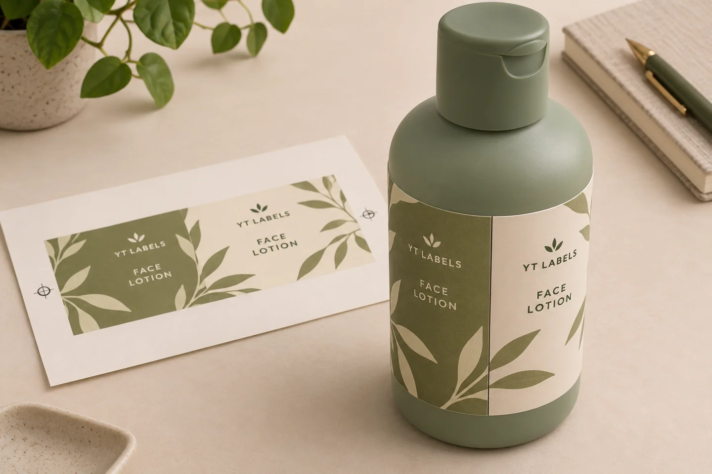

Choose the proof by what is still undecided
Suppose your team is approving a wrap label for a new face lotion. The front looks centered in the render, but no one has checked where the end of the wrap lands beside the back-panel copy. You can approve the look for discussion while leaving fit open. Mark the approval that way so the printer does not mistake it for a release to print.
| What is unresolved? | What to review | What can you approve? | When to hold |
|---|---|---|---|
| Is this the correct artwork? | Flat digital proof tied to the current dieline, artwork version and SKU. | Copy, barcode placement, graphic layout and the dimensions shown on the drawing. | Text, dimensions, layers or version disagree with the brief. |
| Does the design read well around the bottle? | Optional 3D mockup or photo mockup with front, back and seam views. Confirm which bottle dimensions and artwork file were used. | Visual direction, such as which panel should face forward and where a seam might interrupt the design. | The model is generic, the back is missing, or the render hides a fit question that changes the order. |
| Will it fit the assigned container? | Full-size paper fit check on the actual bottle for layout and trim. Use an applied printed sample if stock behavior matters. | Placement, clearance and actual seam position on the checked bottle. A paper wrap only establishes what you saw with that paper. | The edge crosses the shoulder, the back text falls into the seam, or the pack version is unconfirmed. |
| Does the finished construction meet the brief? | Representative printed label on the intended filled container. Agree which material, adhesive, inks and finish the sample represents. | Only the properties checked under agreed viewing, application and handling conditions. | A substitute stock or finish was used, or an order-critical property was not checked. |
A screen preview can make a finish look convincing without showing how the printed label behaves. For example, Adobe’s mockup documentation describes mapping artwork onto the geometry of an image. That can help your team check the composition. For matching the appearance of clear film, foil or a pale ink on your filled bottle, ask what the proposed print sample actually represents.

Give your team a four-field approval record
- Identify the input. Record the SKU, container code or revision, measured label panel, artwork revision and dieline revision. Send an editable file or production PDF when available; if you only have a reference image, point out what still needs creating.
- Name the view or sample. Record the flat proof filename, the mockup views supplied, or the applied sample ID. On a wrap, ask to see the seam and the back panel together. For a paper fit check, print at actual size and verify the printed dimensions with a ruler before wrapping it.
- Write what passed and who approved it. The brand owner can approve copy; the person checking the bottle can approve visible position and trim. Review product name, volume, ingredients, directions and barcode location against your approved copy. A barcode that looks right on a screen still needs the required verification on the actual packaging if scanning is a release criterion.
- List the holds and the next check. If the model is approximate, mark “visual direction only.” If your dieline changes after the fit check, confirm which parts of the proof need another review. Hold production when an unresolved item could change the label construction or artwork.
Example approval note: “Face lotion, bottle B-04, art R03, dieline D02. Copy and flat layout approved. Front/back placement accepted for review; release held pending a seam check on the production bottle and approval of the printed finish.” This is an example record, not a tolerance or a sample specification.
What to ask the printer for before bulk approval
Ask which digital proof is included, whether a 3D view is available for your pack and what reference it would be built from. YT Labels’ sample policy describes digital proofing for layout, size and material direction; physical sample cost and timing depend on project details. Confirm the format and scope in your project quote before relying on it.
When a print sample is required, check the sample quote deliverables separately. Review the cosmetic bottle label options for materials to discuss. If your project relies on wet handling, adhesion, or machine application, agree on the sample and acceptance conditions for those checks before release.
Request a proof plan for your bottle label
Include the SKU count, application method, container dimensions, chosen finish and the approval still open: copy, wrap position or printed construction. The form prepares your inquiry message. Send drawings, artwork and pack photos by email or WhatsApp.
Prepare a proof inquiry